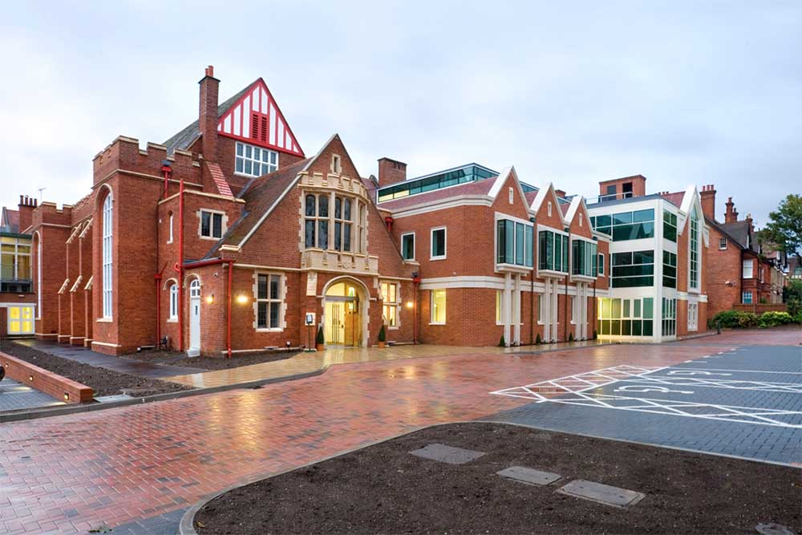

Facade Design
School
1050m2
Completed
This project involved a substantial extension and refurbishment of a secondary school in Reading, situated within a designated conservation area. The new three-storey extension, positioned alongside the original school building, provides twelve classrooms, administrative areas and a welcoming reception space. All classrooms were designed with natural ventilation in mind, while the selected construction materials and envelope strategy ensure strong thermal performance. The intervention achieves efficient, high-quality educational spaces while maintaining a cohesive architectural relationship with the existing structure.
